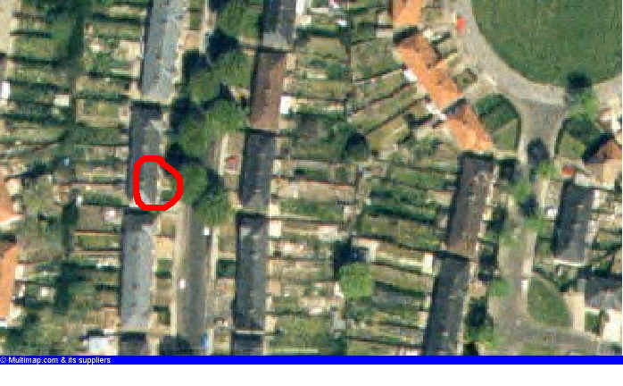

deserved and severe punishment
Some people saw her death as divine retribution for her crimes.
Retribution swiftly overtook him (=He was soon found and punished).
retribution


 noun [U] FORMAL
noun [U] FORMAL
deserved and severe punishment
Some
people saw her death as divine retribution for her crimes.
Retribution
swiftly overtook him (=He was soon found and punished).
| Tanveer Akram 85 Fieldhouse Road Yardley Birmingham B25 8SL Telephone +44 (0)121 785 5243 |
 |
cunning
(CLEVER)


 adjective
adjective
(of people) clever at planning something so that you get
what you want, esp. by tricking other people, or (of things) cleverly made for a
particular purpose
a
cunning plan/plot/idea
It
was cunning of the managing director to sell his shares just
before the company went bankrupt!
She's
invented a cunning little device for catching mice.
He
is cunning as a fox (=very cunning).
cunning


 noun [U]
noun [U]
We
need to show a bit of cunning if we want to trick the enemy.
cunningly


 adverb
adverb
a
cunningly worked-out plan